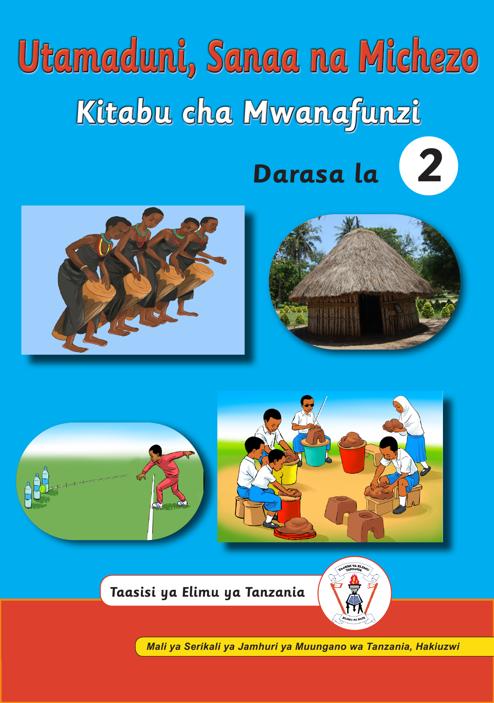

Utamaduni, Sanaa na Michezo, Kitabu cha Mwanafunzi, Darasa la Pili

Taasisi ya Elimu Tanzania. Mali ya Serikali ya Jamhuri ya Muungano wa Tanzania, Hakiuzwi.Jalada lenye mandharinyuma ya samawati. Juu kuna kichwa Utamaduni, Sanaa na Michezo na Darasa la Pili. Vielelezo vinaonyesha wachezaji wa ngoma ya asili, nyumba ya msonge, mwanafunzi akirusha mpira kuelekea chupa na shabaha, na wanafunzi wakifinyanga udongo. Chini kuna jina na nembo ya Taasisi ya Elimu Tanzania pamoja na ukanda wa Mali ya Serikali, Hakiuzwi.